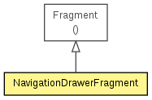

in.tosc.eventful.activities
Class NavigationDrawerFragment
java.lang.Object
 Fragment
in.tosc.eventful.activities.NavigationDrawerFragment
Fragment
in.tosc.eventful.activities.NavigationDrawerFragment
public class NavigationDrawerFragment
- extends Fragment

Fragment used for managing interactions for and presentation of a navigation drawer.
See the
design guidelines for a complete explanation of the behaviors implemented here.
| Methods inherited from class java.lang.Object |
clone, equals, finalize, getClass, hashCode, notify, notifyAll, toString, wait, wait, wait |
NavigationDrawerFragment
public NavigationDrawerFragment()
onCreate
public void onCreate(Bundle savedInstanceState)
onActivityCreated
public void onActivityCreated(Bundle savedInstanceState)
onCreateView
public View onCreateView(LayoutInflater inflater,
ViewGroup container,
Bundle savedInstanceState)
isDrawerOpen
public boolean isDrawerOpen()
setUp
public void setUp(int fragmentId,
android.support.v4.widget.DrawerLayout drawerLayout)
- Users of this fragment must call this method to set up the navigation drawer interactions.
- Parameters:
fragmentId - The android:id of this fragment in its activity's layout.drawerLayout - The DrawerLayout containing this fragment's UI.
onAttach
public void onAttach(Activity activity)
onDetach
public void onDetach()
onSaveInstanceState
public void onSaveInstanceState(Bundle outState)
onConfigurationChanged
public void onConfigurationChanged(Configuration newConfig)
onCreateOptionsMenu
public void onCreateOptionsMenu(Menu menu,
MenuInflater inflater)
onOptionsItemSelected
public boolean onOptionsItemSelected(MenuItem item)